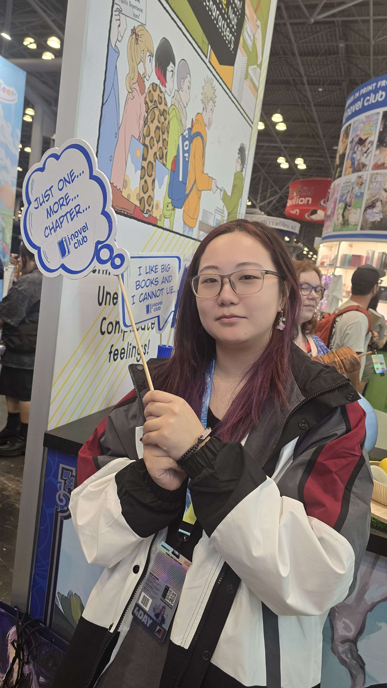

Business analysis
Data-informed decision making, Excel reporting, trend review, and translating numbers into clear operational actions.
Business Analytics · Information Technology · Creative Practice
Hi, I’m Tiffany Yang, an undergraduate at Rutgers Business School studying Accounting. I enjoy combining technology, communication, and creative problem-solving.
Explore my work ↓
A little context
I’m building experience across business analytics, information technology, customer service, social media, tutoring, and event planning. I care about making systems clearer and experiences more welcoming.
Skills
Data-informed decision making, Excel reporting, trend review, and translating numbers into clear operational actions.
Library and help-desk support, digital troubleshooting, service workflows, and documentation for practical user needs.
Front-line service, conflict resolution, multilingual communication, and creating a warm, organized experience for visitors.
Visual storytelling, event planning, social content strategy, and interface work that balances clarity with personality.
Featured work
View all projects →Designed and launched a static web portfolio to present my background, interests, and professional work in a polished format.
View live site ↗Coordinated family events and youth programs, balancing logistics, outreach, and inclusive experiences for large groups.
See experience →Created and shared visual, promotional, and service-minded content to help maintain a welcoming business presence online.
GitHub profile ↗